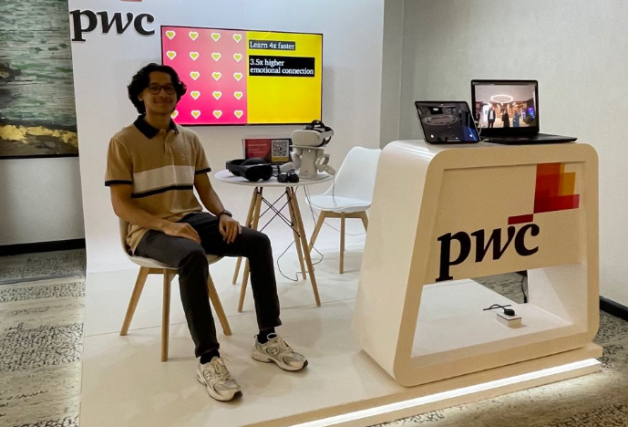

Experience
 President
President
Sep 2024 – Present
I founded and led the Nahda Student Club in Birmingham to create a welcoming and supportive community where MENA students could thrive academically and professionally. My vision was to provide resources, mentorship, and opportunities for personal and career growth, all while fostering a strong sense of collaboration and empowerment.
- Introduced a flat team structure to encourage collaboration and ownership.
- Held four workshops with over 120 attendees on internship prep, academic success, and career planning.
Nahda first event group picture:

 Sales IT Intern
Sales IT Intern
Jul 2024 – Sep 2024
During my time at Procter & Gamble, I managed high-impact technology projects that aligned with the company’s technical standards to drive growth and enhance operational efficiency. My role centered on delivering innovative solutions and optimizing data processes to empower strategic decision-making.
- Created real-time interactive Power BI dashboards, simplifying complex datasets into actionable insights for strategic decisions.
- Led the Commercial Master Data Transformation project, unifying data hierarchies and improving accuracy and consistency across systems.
P&G OGSM:

 Emerging Technologies Lab Intern
Emerging Technologies Lab Intern
Jul 2023 – Aug 2023
At PwC’s Emerging Technologies Lab, I contributed to cutting-edge AI initiatives, enhancing prototypes and exploring the societal impact of advanced technologies. My work spanned developing technical solutions and providing actionable insights to drive innovation responsibly.
- Integrated LLMs like GPT to enhance AI prototypes, enabling sophisticated natural language understanding and generation.
- Conducted ethical AI research, examining societal impacts and presenting insights to guide responsible AI deployment.
PwC EmTech Booth at an external event:
Education
 University of Birmingham
University of Birmingham
BSc Artificial Intelligence & Computer Science (2021 – 2025)
- Achieving First Class Honours (GPA: 4/4).
- Relevant Modules: Artificial Intelligence, Intelligent Data Analysis, and Software Engineering.
Projects
 Leveraging Large Language Models: A Framework for Review-Driven Insights in Hospitality
Leveraging Large Language Models: A Framework for Review-Driven Insights in Hospitality
Oct 2024 – Present
Currently developing an AI-powered framework leveraging LLMs like LLaMA and BERT for sentiment analysis and topic modeling on large-scale guest feedback. Integrated VADER for nuanced sentiment scoring, enhancing customer satisfaction assessments. Created interactive Power BI dashboards to visualize sentiment trends and KPIs, empowering hotel management with actionable insights. Implemented Python-based NLP pipelines for data preprocessing, ensuring high-quality input for machine learning models.
Report Mockup:

 Glow Brush: Gamified Smart Toothbrush
Glow Brush: Gamified Smart Toothbrush
Nov 2024 – Dec 2024
Collaborated on designing a smart toothbrush app to improve children's oral hygiene through gamification, applying insights from the HCI module. Conducted usability testing, including cognitive walkthroughs and heuristic evaluations, to enhance user experience. Used Figma for prototyping and iterative design, creating an intuitive, visually appealing interface. Emphasized user-centered and inclusive design principles, ensuring accessibility and engagement through continuous feedback and testing.
Project Poster:

Commercial Master Data Transformation
Jul 2024 – Sep 2024
Led a first-of-its-kind global initiative at Procter & Gamble to unify data hierarchies across systems and categories, addressing inconsistencies and improving data accuracy. Collaborated with all P&G category teams to define and standardize optimal data hierarchy practices. This groundbreaking effort streamlined workflows, reduced manual effort, and empowered teams with consistent, actionable data for strategic decision-making across the organization.
Automated Reports & Dashboards
Aug 2024 – Sep 2024
Developed Power BI dashboards delivering real-time analytics and actionable insights, enabling leadership to drive strategic decisions. Built seamless ETL processes with Power Query to integrate and clean data from diverse sources, ensuring reliable and consistent reporting. Applied DAX for advanced calculations, enriching KPI analysis and dashboard interactivity. Partnered with cross-functional teams to align dashboards with specific business goals, enhancing usability and relevance. Designed efficient data models to improve query performance and enable fast, detailed analysis, with drill-through functionalities uncovering key trends and opportunities.
Sticky-Notes Image Generator Prototype
Jul 2023 – Aug 2023
Enhanced an AI-powered system by integrating ChatGPT to perform advanced keyword extraction, transforming sticky note text into meaningful, visually coherent images. Leveraged the DALL-E API to generate high-quality visuals that faithfully represented the textual input while adding an aesthetic flair—because even sticky notes deserve a glow-up!
Prototype testing:

Writings and Talks
Advice for Young CS Students and Learners
Oct 8, 2022
Sharing key advice to help computer science students and learners excel in their academic and career journey.
How to Get Into a UK Top University
Sep 2, 2021
A guide for aspiring students on securing admission to top universities in the UK, including practical tips.
Tik-tok Addictive Algorithm
Feb 1, 2023
Analyzing the algorithm that powers TikTok’s addictive user experience and its broader implications.
AI Major
Mar 20, 2021
Insights on the journey of pursuing an Artificial Intelligence major and its future potential.
Deep Fake Technology
Nov 23, 2024
Exploring the advancements and ethical considerations of deep fake technology in modern media.
Life as an International Student
Oct 25, 2022
Discussing the challenges and rewarding experiences of studying abroad as an international student.
Scholarship Chair
Nov 16, 2022
Insights on leading as a scholarship chair and supporting students in achieving their academic goals.
Aramco CPP Scholarship Insights
Mar 12, 2022
Providing valuable insights on the Aramco CPP scholarship program to guide prospective applicants.
Skills
Programming Languages
-
 Python
★★★★★
Python
★★★★★
-
 Java
★★★★★
Java
★★★★★
-
 MATLAB
★★★☆☆
MATLAB
★★★☆☆
AI & Data Science Tools
-
 Power BI
★★★★★
Power BI
★★★★★
-
 Pandas
★★★★★
Pandas
★★★★★
-
 TensorFlow
★★★★☆
TensorFlow
★★★★☆
-
 PyTorch
★★★★☆
PyTorch
★★★★☆
-
 OpenCV
★★★★☆
OpenCV
★★★★☆
-
 NumPy
★★★★☆
NumPy
★★★★☆
Design & Development
-
 Figma
★★★★★
Figma
★★★★★
-
 Agile Methodologies
★★★★★
Agile Methodologies
★★★★★
-
") Human-Computer Interaction
★★★★★
Human-Computer Interaction
★★★★★
-
 Usability Evaluation
★★★★☆
Usability Evaluation
★★★★☆
Additional Skills
-
") Natural Language Processing (NLP)
Natural Language Processing (NLP)
-
") Machine Learning (ML)
Machine Learning (ML)
-
 Data Visualization
Data Visualization
-
 API Integration
API Integration
-
") Version Control (Git)
Version Control (Git)
Contact
Email: fernas-2002@hotmail.com
LinkedIn: Connect with me